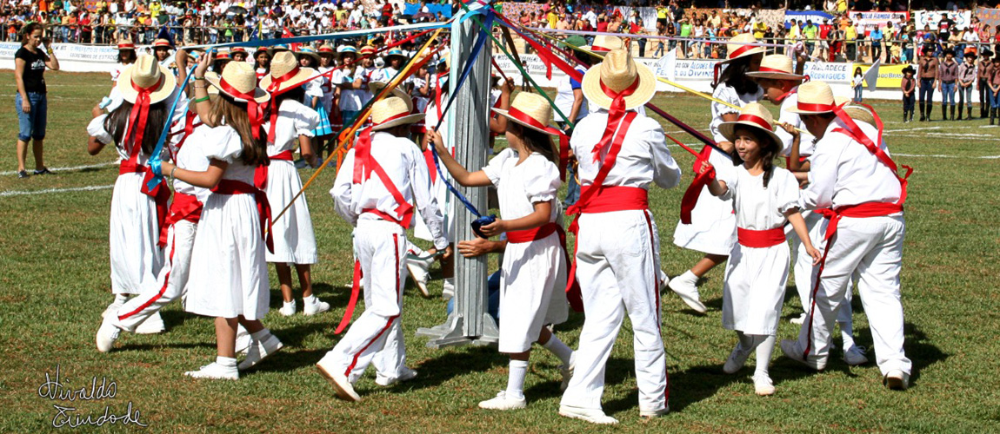
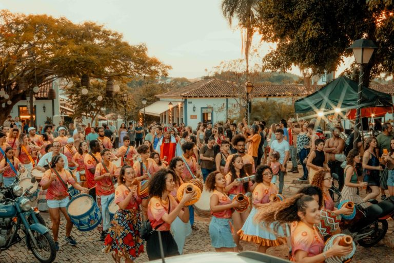
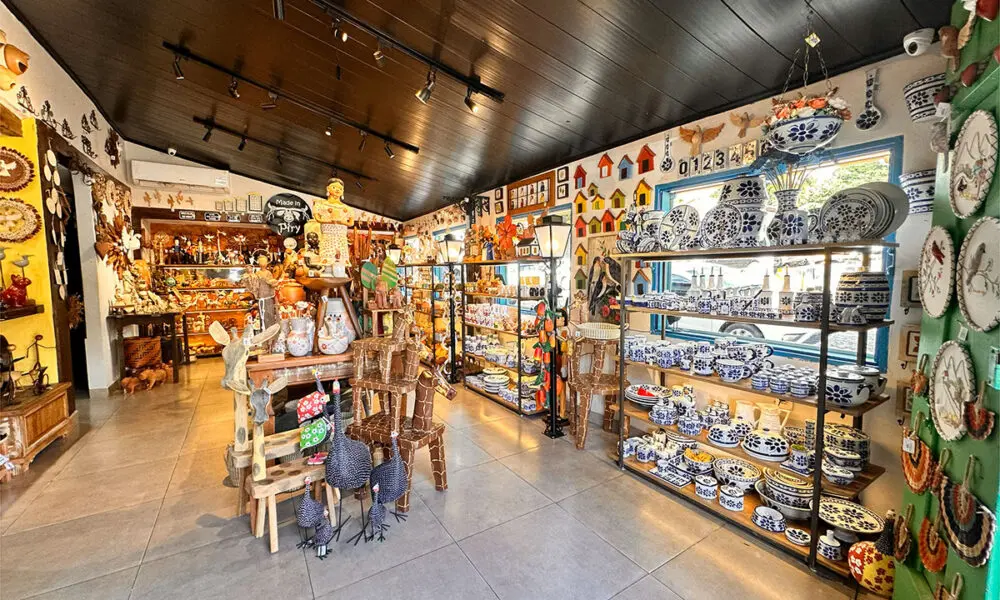

- Festa do Divino e Cavalhadas de Pirenóplis
- Música
- Artesanato

A Festa do Divino de Pirenópolis é um Patrimônio Cultural Imaterial do Brasil. Celebrada desde 1819, ela mistura fé católica com rituais profanos que unem toda a comunidade local.
O evento acontece na época de Pentecostes, 50 dias após a Páscoa. A festividade dura cerca de 12 dias e atrai milhares de turistas com missas, novenas e alvoradas.
O ponto alto são as Cavalhadas de Pirenópolis, encenações ao ar livre. Os cavaleiros usam roupas luxuosas para recriar as batalhas medievais entre mouros e cristãos.
Os personagens dos Mascarados também divertem o público pelas ruas da cidade. Eles usam trajes coloridos, máscaras de boi e chocalhos para fazer barulho.
As Folias do Divino completam a tradição ao visitar as casas locais. Os foliões carregam a bandeira sagrada, cantam músicas antigas e abençoam as famílias.

A música de Pirenópolis une fé e história, brilhando intensamente nas festas coloniais e religiosas.
As bandas locais tocam marchas centenárias, enchendo as ruas históricas com sons do passado.
O canto em latim nas igrejas barrocas preserva uma tradição vocal guardada há gerações.
Ritmos populares como Congados e folias trazem cores, danças e muita alegria ao povo.

O artesanato de Pirenópolis destaca-se pelas joias exclusivas em prata e gemas preciosas. Essa forte tradição secular reflete a identidade cultural e a história mineral da região.
Esculturas e móveis rústicos ganham vida pelas mãos de artesãos que moldam madeiras locais. Cada peça carrega traços marcantes e a beleza típica da vegetação do Cerrado.
A argila moldada se transforma em panelas e figuras do folclore regional pelas mãos de ceramistas. Esses profissionais mantêm vivas as técnicas ancestrais de modelagem manual.
Tecidos e bordados coloridos retratam com delicadeza a fauna e a flora do município goiano. Os fios entrelaçados revelam a paciência e a identidade cultural das bordadeiras.
Máscaras de couro e adereços da Festa do Divino mostram a força do artesanato festivo. Essas raras criações unem fé e folclore, preservando o valioso legado local.